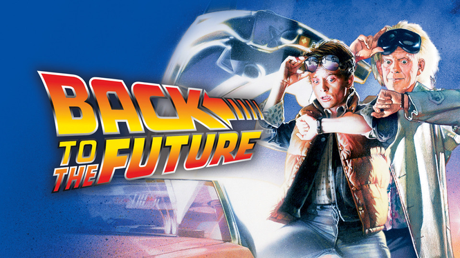
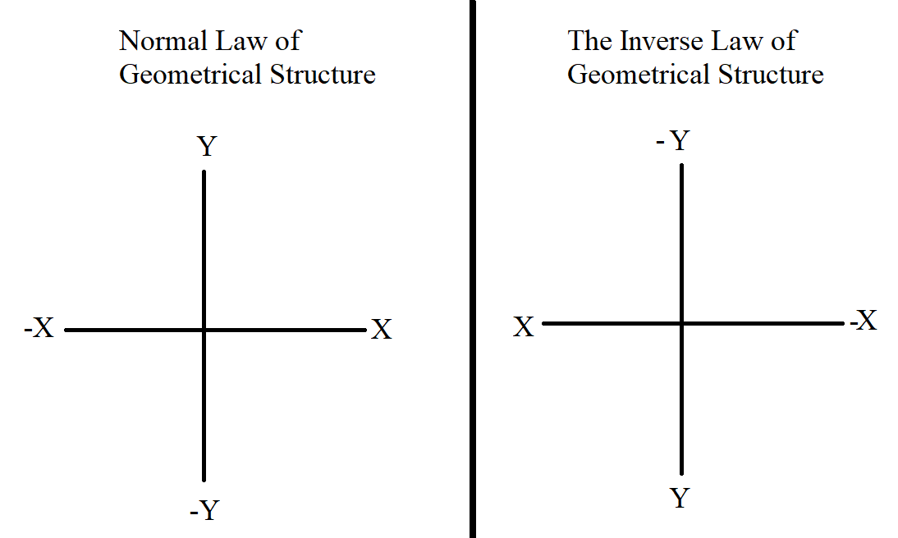
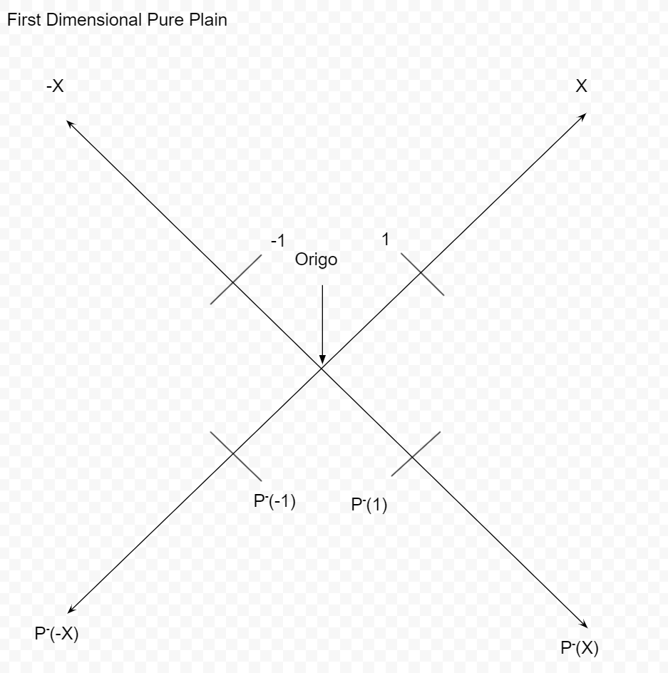

Theoretical Proof
To explain what, how and why about the theory we need to question another question. What is negetive time? I dont mean in any complex way, just what would happen if you would be in negative time. For most this is thier idéa:

'Back to the future' has a some what simple idéa, simply to go back in time, Or in other words 'reversing time'. So lets try this idéa with an experiment.
Lets say we are watching a movie (f.ex. 'Back to the future'). We decied to also then make a copy of the movie to be the negative time version, or to say we play everything in reverse. Bellow you se two identical gifs that then one has been revered in its order.
Normal timed
Theoretical negatived timed
This is fine right? No problem? There is a small problem. And that small problem makes a very big problems. But what is the problem? Well if we start playing both at the same time they will be always identical in the middle of the movies.
As seen above if b and e are equal that means that the center points are equal to eachone and another. But if thats true means that the positive center is the same as the negative center.
But we didnt decide how long the movie is, and the movie can have any length. This will change the movies center. With that the center can be any thing. We therefore can say that in time, point 'a' will be equal to its negative point (aka '-a').
But there is a problem this makes. Due to time is a part of geometry (that is the reason why a timeLINE is a line), that means this also works for a distance. So therefore can say that in a distance, point 'a' will be equal to its negative point (aka '-a').
But even that maks a new problem. Due to geometry is based on numbers, that means this will also works for numbers. so there fore we can say that in numbers, point 'a' will be equal to its negative point (aka '-a').
But that means that a=-a, or in other words
1 = -1
This is very problematic if it wasent obivius. But what if, instead of being negative, it it still posative... but in another concept... or in another Plain? And that is what a negative plain is.
But what then even is negative time?!? Well througth testing I came up with that it is 'The inverse law of geometric structure'. Or to say in other words you flip the negative and posative cordinates through origo (aka the point of 0,0)

So that is what happens in negative time. Negative plain negative time is just both consepts at the same time. And presto! We have Pure Plain of time, and due to the same reasons as before this also works for numbers.
So this is what we have right now:
